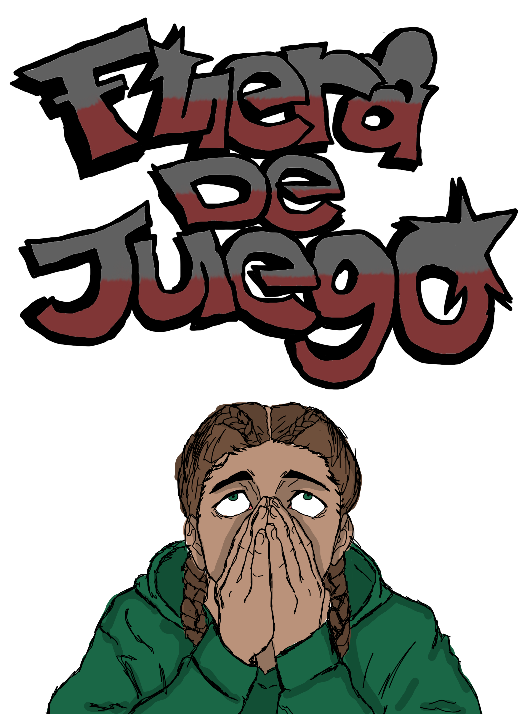
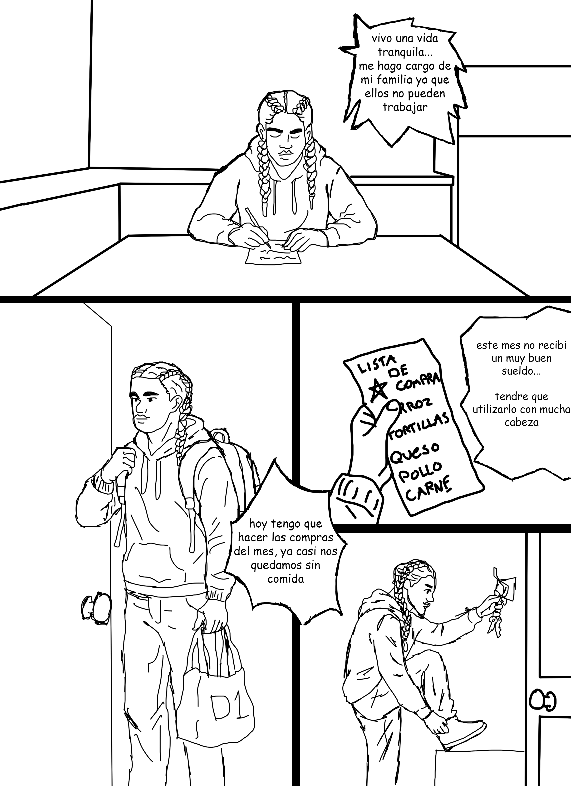
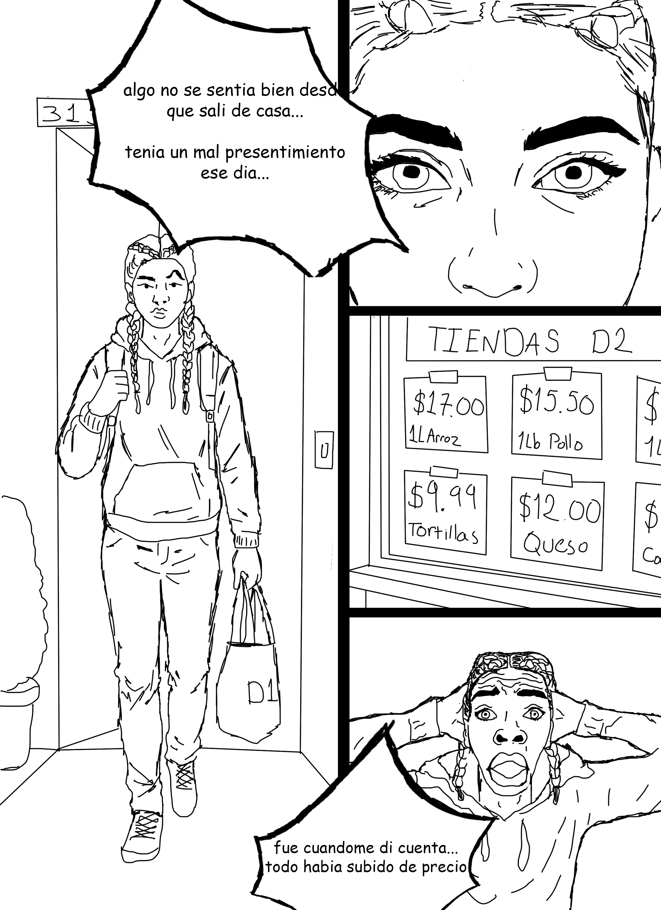
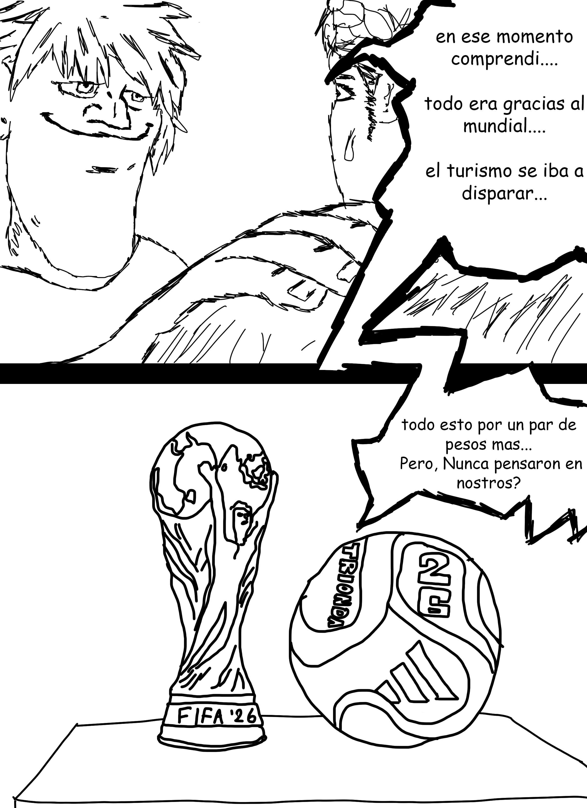
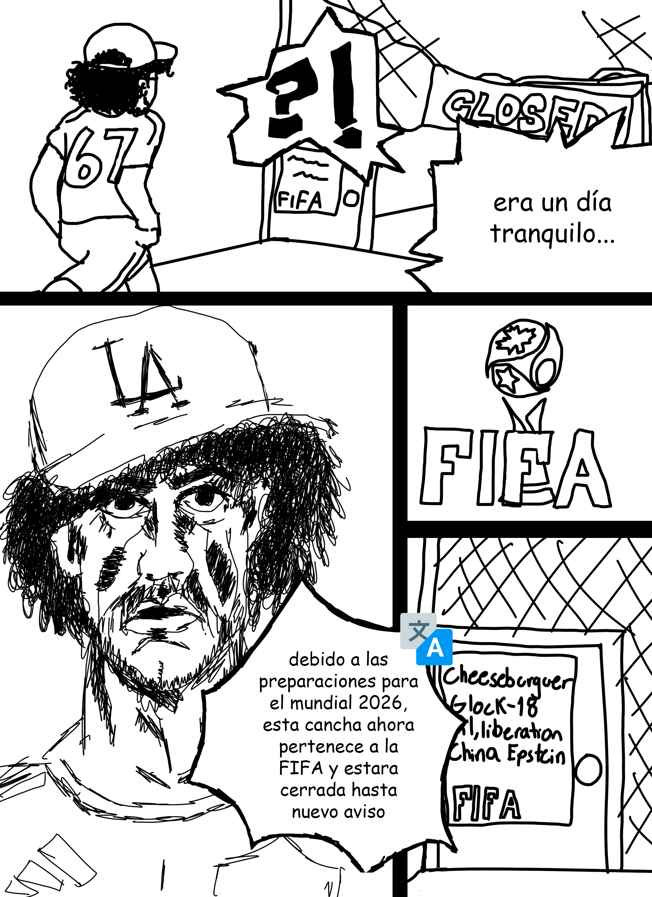
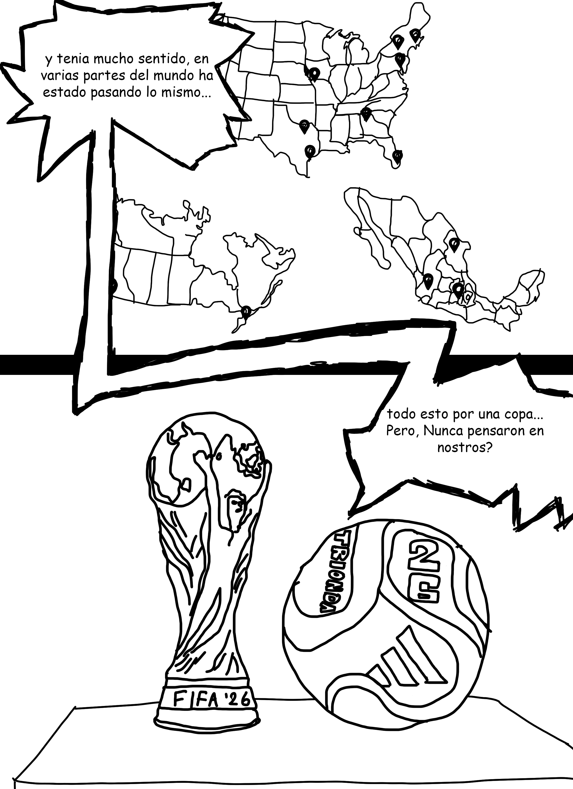
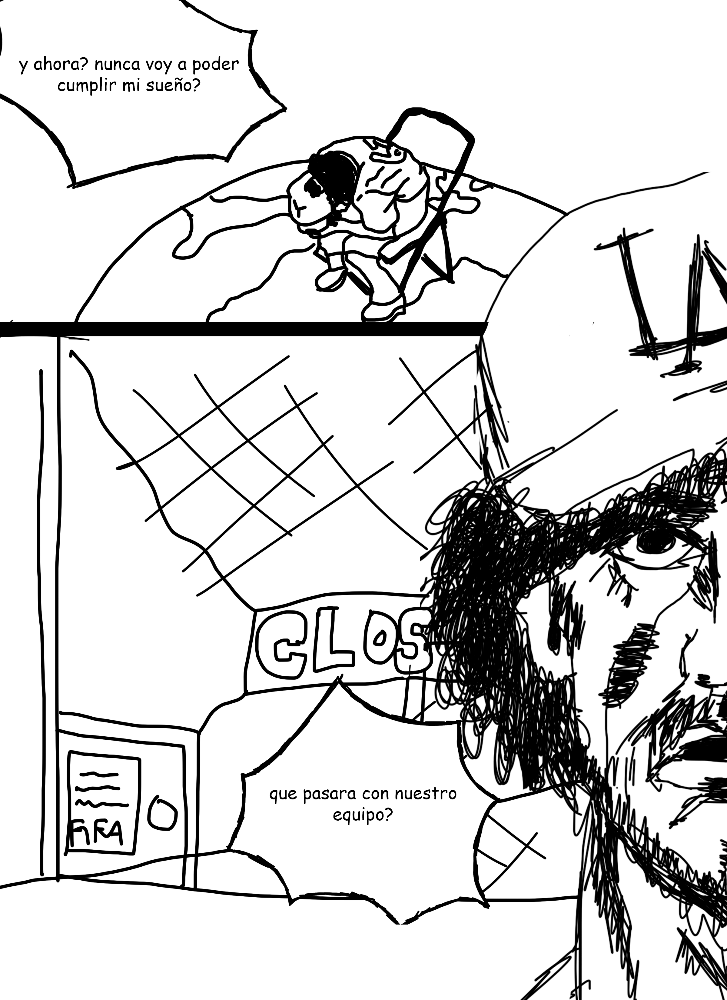
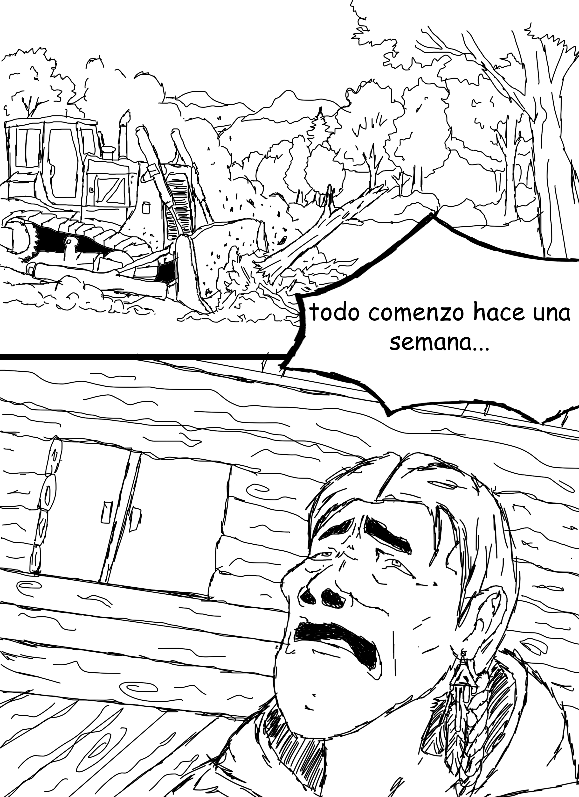
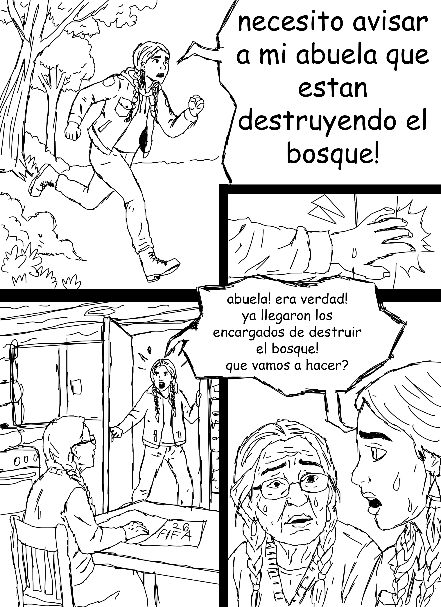
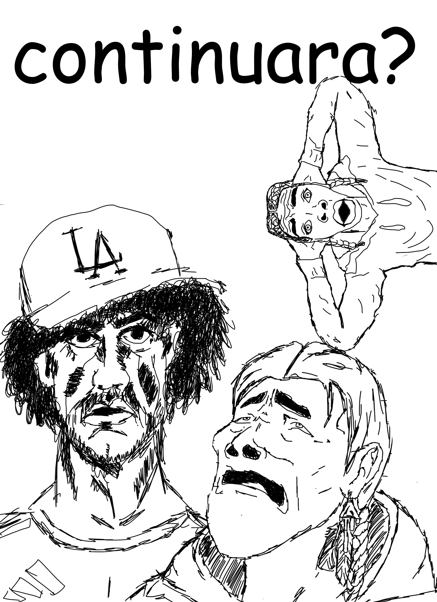

Periodismo Grafico
El Comic
Fuera de Juego en 9 paginas. Usa los botones, las flechas del teclado o desliza para pasar paginas.










Pag. 1 / 10
Usa los botones o las flechas del teclado — la hoja gira como en un libro real
Periodismo grafico
Cada vineta esta basada en datos reales: precios de alquiler, desalojos documentados y testimonios de activistas.
Experiencia transmedia
El QR del comic impreso te trae aqui. Mapas, datos reales y voces de las comunidades afectadas.
Desbloquea el Cap. 4
El final solo existe si tu lo construyes. Comparte tu testimonio para acceder al capitulo 4.
Quieres ser parte?
Tu historia puede aparecer en la proxima edicion del comic.